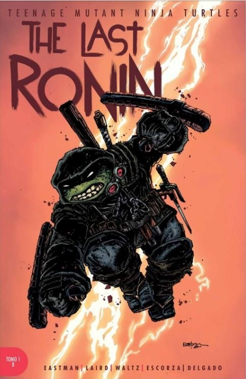

Fecha de Publicacion:
2020
Por otro lado, en la historia
se va conociendo como murieron
Raphael, Leonardo, Donatello y Splinter,
pero el único que puede encontrar la paz
en sí mismo es Mikey luego de su última misión,
pero las cosas no termina ahí, pues Casey Jones
usa la sangre del cuerpo de esta tortuga para crear
una nueva generación
de hermanos mutantes ninjas.
dasdasds